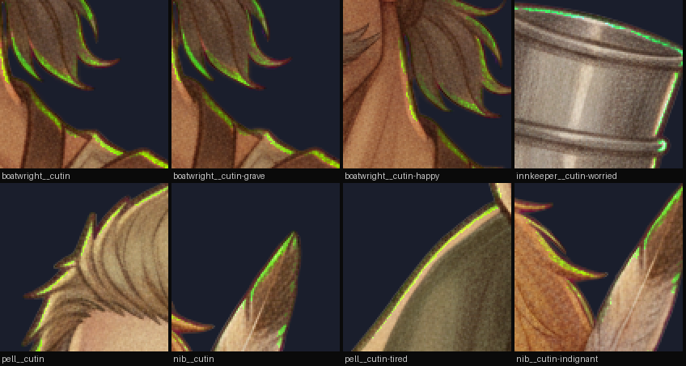
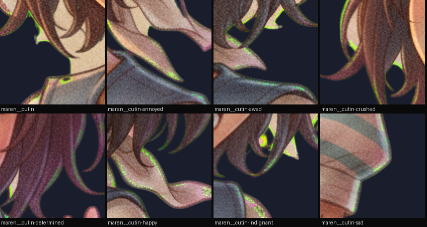
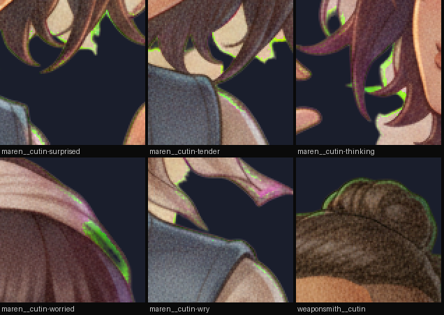
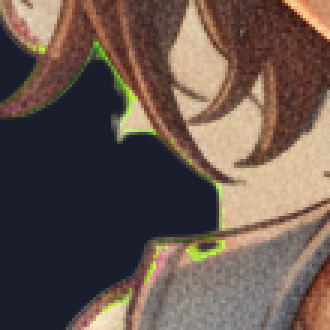
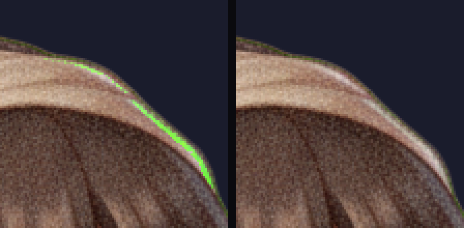
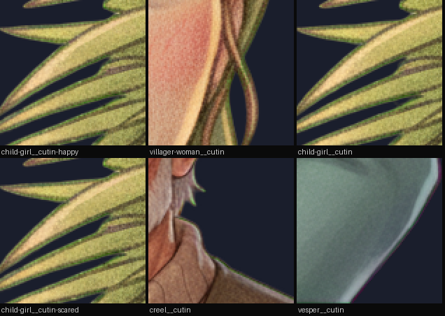
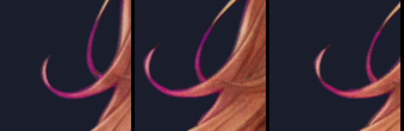

The evidence behind chroma_rim in tools/cutin_edge.py. Every crop
on this page is at NATIVE resolution over a night value (26,30,44) — a fringe is
invisible over white, which is how it shipped in the first place.
The despill fix is commit 8416ca3c, so every pre-fix plate is recoverable
verbatim at 8416ca3c^. 105 were. 98 of them have a byte-comparable
post-fix twin at the same geometry, and the pixels that were chartreuse before and
are not after ARE the defect, with legitimately green paint cancelled out by
construction. That labels 51 plates pixel-for-pixel.
The counter reproduces the fix commit's own recorded number to within one pixel:
G − max(R,B) > 8 over visible pixels gives 3157 px on
boatwright/cutin against its recorded 3158.
boatwright/cutin — pre-fix (left) and shipped (right), same art, one variable:
The eight worst pre-fix plates by defect pixels:

chroma_rim = share of the figure's outer 3 px SHELL carrying
G − max(R,B) > 72, minus the share of its own material 4–10 px in
that does. The hue is the key's own axis: gen-cutin identifies magenta key by
CHANNEL ORDER (keyness = min(R,B) − G), and over-subtracting it leaves the
mirror image of that signature. key_rim is the same number for key colour
that survived — reported, not gated (see §5).
| form | why it fails |
|---|---|
| per-pixel vs a LOCAL interior reference | defeated by texture — Maren's striped shirt puts a teal stripe at the boundary and a stripe/cream average a few px in, so honest paint reads as an excursion |
| plain shell share, no subtraction | defeated by paint — child-girl's silhouette IS a bundle of green reeds |
| "chroma mass" (Σ excess above a low threshold) | measured strictly worse than a count at every threshold: separation 0.10–0.51x, i.e. inverted |
Paint runs through BOTH bands and cancels. A rim exists in the shell and nowhere else.
51 known-defect plates against the 106 shipped plates that carry no rim, shell-minus-core share:
| T | weakest defect | worst clean | verdict |
|---|---|---|---|
| 24 | 0.0056 | 0.0942 | inverted |
| 32 | 0.0041 | 0.0474 | inverted |
| 40 | 0.0022 | 0.0195 | inverted |
| 48 | 0.00127 | 0.00649 | inverted |
| 56 | 0.00123 | 0.00171 | inverted |
| 64 | 0.00088 | 0.00033 | separated 2.7x |
| 72 | 0.00088 | 0.00016 | separated 5.5x — SHIPPED |
| 80 | 0.00055 | 0.00005 | separated 11.7x, but the defect has started to fade faster than the paint |
Below 64 the honest green paint OUTSCORES the defect and no bar exists at all. 72 is the highest threshold that still costs the weakest measured defect nothing. GATE = 0.0003, in the gap: 1.9x the clean ceiling, 2.9x under the weakest defect. 102 of the 120 shipped plates read exactly zero, and the highest-scoring clean plate in the cast is one pixel.
Maren's whole suite of 13 plus weaponsmith/cutin. These are the "20 left" the fix commit named as unrepairable without studio art to re-mat from — they were never put through the fixed despill and still ship the rim.


maren/cutin at 3x — this is what has been shipping:

The premise above is wrong in one word: the studio art is GITIGNORED, not ABSENT. Maren's
full pose matrix — 13 moods × 3 rolls — is on the authoring machine, and the exact
rolls the user picked are recorded in gen-cutin-poses.mjs's ALL_PICKS.
So the same drawings went back through the pipeline whose band despill was fixed in 8416ca3c,
and all thirteen pass: chroma_rim 0.0047–0.0176 → 0.00000 on twelve and 0.00007 on
crushed — the level 102 of the 106 clean plates read, not a squeak under the bar. Nothing
else moved (halo within a level, keyres 0.0, speckle and pinhole unchanged), because nothing but
the fringe changed. Identity is preserved BY CONSTRUCTION: same source art, same picks, and
silhouette_crop returned the identical box on 12 of 13.
maren/cutin-awed at 3× — SHIPPED left, re-matted right. 289 firing pixels → 5:

weaponsmith/cutin is a different animal and stays red. His plate was matted at 11:04 and committed in the fix itself at 11:08, so it is ALREADY post-fix output — a re-mat reproduces it exactly, 7 firing pixels and 0.00031 both ways. It is still a REAL defect and not paint, which is worth stating because nobody had checked: the same 7 px in the SOURCE drawing read anti = 4.0 max, a neutral khaki (103,107,71). The matte made the green. It is 7 dark-green pixels in the notch of a blade at the top of a 956 px plate, it cannot be re-matted away, and the bar is not moved to buy margin for it — 0.0002 would start failing child-girl's reeds. The cheap triage this leaves behind: compare a borderline plate's firing pixels against the SOURCE drawing. Paint is in both; residue is only in the matte.
And the nearest PASSING plates, which are paint and not defects: child-girl's reeds, villager-woman's olive braid, creel, Vesper's sage coat.

creel/cutin at 4x — the highest-scoring clean plate in the cast, ONE firing pixel:
key_rim — the same measurement for key colour that SURVIVED — is reported
and not gated. Vesper owns the top ten of the whole cast on it (0.011–0.028), and what
fires is the magenta edge along her auburn hair strands. I could not tell that from
bloomed key by eye and have no labelled positive set to settle it, and gating it would
refuse the character the framing gate is calibrated on for something that may be her own
art. The direction is not unguarded: gen-cutin's keyres already refuses any
visible pixel still within KEY_RESIDUE_R of the key, which is this failure at source.

python3 tools/cutin_edge.py --selftest builds two synthetic plates
differing only in whether the outer two pixels have been through the old despill's
over-subtraction, and asserts what matters: the fringed plate reads halo −12.1,
i.e. the luminance gate is not merely blind to it but REASSURED by it, and every term in
this file except chroma_rim passes it.